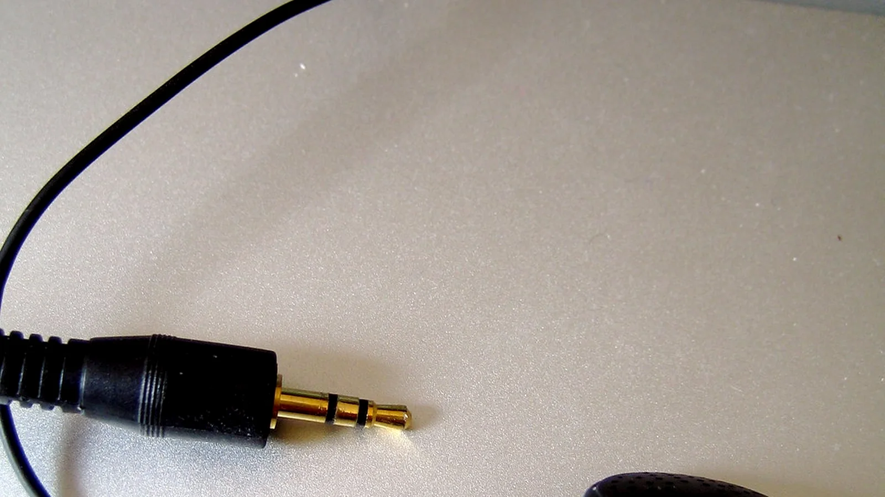

Headset Buying Checklist
Headset Buying Checklist matters because a bluetooth headset has to fit the person, laptop, phone, meeting software, office noise, desk movement, and call routine rather than simply look premium in a product photo.
For headset buying checklist, test the headset with the actual laptop, phone, meeting app, glasses if worn, noisy typing, nearby voices, walking range, and a normal long-call schedule.
The buying process should stay practical. A headset can have strong ANC but fail if the microphone sounds compressed, the mute control is confusing, the ear pads get hot, or Bluetooth reconnects slowly between meetings.
Good comparison notes include headset weight, clamp force, ear pad material, boom mic position, microphone noise-cancelling, sidetone, ANC, transparency mode, battery life, charging dock, USB dongle, multipoint pairing, warranty, and return policy.
For product-level comparison, the related LeStallion guide to noise-cancelling bluetooth headset options for office calls is the next step after this headset buying checklist planning note.
Operating checkpoint 1: review headset buying checklist against long-call comfort, glasses fit, microphone clarity, keyboard noise, nearby voices, mute confidence, battery life, charging habits, Bluetooth reconnect speed, multipoint handoff, platform compatibility, replacement ear pads, and return terms. Record the practical result so the final bluetooth headset choice is based on daily call behavior instead of product photos.
Operating checkpoint 2: review headset buying checklist against long-call comfort, glasses fit, microphone clarity, keyboard noise, nearby voices, mute confidence, battery life, charging habits, Bluetooth reconnect speed, multipoint handoff, platform compatibility, replacement ear pads, and return terms. Record the practical result so the final bluetooth headset choice is based on daily call behavior instead of product photos.
Operating checkpoint 3: review headset buying checklist against long-call comfort, glasses fit, microphone clarity, keyboard noise, nearby voices, mute confidence, battery life, charging habits, Bluetooth reconnect speed, multipoint handoff, platform compatibility, replacement ear pads, and return terms. Record the practical result so the final bluetooth headset choice is based on daily call behavior instead of product photos.
Operating checkpoint 4: review headset buying checklist against long-call comfort, glasses fit, microphone clarity, keyboard noise, nearby voices, mute confidence, battery life, charging habits, Bluetooth reconnect speed, multipoint handoff, platform compatibility, replacement ear pads, and return terms. Record the practical result so the final bluetooth headset choice is based on daily call behavior instead of product photos.
Operating checkpoint 5: review headset buying checklist against long-call comfort, glasses fit, microphone clarity, keyboard noise, nearby voices, mute confidence, battery life, charging habits, Bluetooth reconnect speed, multipoint handoff, platform compatibility, replacement ear pads, and return terms. Record the practical result so the final bluetooth headset choice is based on daily call behavior instead of product photos.
Operating checkpoint 6: review headset buying checklist against long-call comfort, glasses fit, microphone clarity, keyboard noise, nearby voices, mute confidence, battery life, charging habits, Bluetooth reconnect speed, multipoint handoff, platform compatibility, replacement ear pads, and return terms. Record the practical result so the final bluetooth headset choice is based on daily call behavior instead of product photos.
Operating checkpoint 7: review headset buying checklist against long-call comfort, glasses fit, microphone clarity, keyboard noise, nearby voices, mute confidence, battery life, charging habits, Bluetooth reconnect speed, multipoint handoff, platform compatibility, replacement ear pads, and return terms. Record the practical result so the final bluetooth headset choice is based on daily call behavior instead of product photos.
Operating checkpoint 8: review headset buying checklist against long-call comfort, glasses fit, microphone clarity, keyboard noise, nearby voices, mute confidence, battery life, charging habits, Bluetooth reconnect speed, multipoint handoff, platform compatibility, replacement ear pads, and return terms. Record the practical result so the final bluetooth headset choice is based on daily call behavior instead of product photos.
Operating checkpoint 9: review headset buying checklist against long-call comfort, glasses fit, microphone clarity, keyboard noise, nearby voices, mute confidence, battery life, charging habits, Bluetooth reconnect speed, multipoint handoff, platform compatibility, replacement ear pads, and return terms. Record the practical result so the final bluetooth headset choice is based on daily call behavior instead of product photos.
Operating checkpoint 10: review headset buying checklist against long-call comfort, glasses fit, microphone clarity, keyboard noise, nearby voices, mute confidence, battery life, charging habits, Bluetooth reconnect speed, multipoint handoff, platform compatibility, replacement ear pads, and return terms. Record the practical result so the final bluetooth headset choice is based on daily call behavior instead of product photos.
Operating checkpoint 11: review headset buying checklist against long-call comfort, glasses fit, microphone clarity, keyboard noise, nearby voices, mute confidence, battery life, charging habits, Bluetooth reconnect speed, multipoint handoff, platform compatibility, replacement ear pads, and return terms. Record the practical result so the final bluetooth headset choice is based on daily call behavior instead of product photos.
Operating checkpoint 12: review headset buying checklist against long-call comfort, glasses fit, microphone clarity, keyboard noise, nearby voices, mute confidence, battery life, charging habits, Bluetooth reconnect speed, multipoint handoff, platform compatibility, replacement ear pads, and return terms. Record the practical result so the final bluetooth headset choice is based on daily call behavior instead of product photos.
Operating checkpoint 13: review headset buying checklist against long-call comfort, glasses fit, microphone clarity, keyboard noise, nearby voices, mute confidence, battery life, charging habits, Bluetooth reconnect speed, multipoint handoff, platform compatibility, replacement ear pads, and return terms. Record the practical result so the final bluetooth headset choice is based on daily call behavior instead of product photos.
Operating checkpoint 14: review headset buying checklist against long-call comfort, glasses fit, microphone clarity, keyboard noise, nearby voices, mute confidence, battery life, charging habits, Bluetooth reconnect speed, multipoint handoff, platform compatibility, replacement ear pads, and return terms. Record the practical result so the final bluetooth headset choice is based on daily call behavior instead of product photos.
Operating checkpoint 15: review headset buying checklist against long-call comfort, glasses fit, microphone clarity, keyboard noise, nearby voices, mute confidence, battery life, charging habits, Bluetooth reconnect speed, multipoint handoff, platform compatibility, replacement ear pads, and return terms. Record the practical result so the final bluetooth headset choice is based on daily call behavior instead of product photos.
Operating checkpoint 16: review headset buying checklist against long-call comfort, glasses fit, microphone clarity, keyboard noise, nearby voices, mute confidence, battery life, charging habits, Bluetooth reconnect speed, multipoint handoff, platform compatibility, replacement ear pads, and return terms. Record the practical result so the final bluetooth headset choice is based on daily call behavior instead of product photos.
Operating checkpoint 17: review headset buying checklist against long-call comfort, glasses fit, microphone clarity, keyboard noise, nearby voices, mute confidence, battery life, charging habits, Bluetooth reconnect speed, multipoint handoff, platform compatibility, replacement ear pads, and return terms. Record the practical result so the final bluetooth headset choice is based on daily call behavior instead of product photos.
Operating checkpoint 18: review headset buying checklist against long-call comfort, glasses fit, microphone clarity, keyboard noise, nearby voices, mute confidence, battery life, charging habits, Bluetooth reconnect speed, multipoint handoff, platform compatibility, replacement ear pads, and return terms. Record the practical result so the final bluetooth headset choice is based on daily call behavior instead of product photos.
Operating checkpoint 19: review headset buying checklist against long-call comfort, glasses fit, microphone clarity, keyboard noise, nearby voices, mute confidence, battery life, charging habits, Bluetooth reconnect speed, multipoint handoff, platform compatibility, replacement ear pads, and return terms. Record the practical result so the final bluetooth headset choice is based on daily call behavior instead of product photos.
Operating checkpoint 20: review headset buying checklist against long-call comfort, glasses fit, microphone clarity, keyboard noise, nearby voices, mute confidence, battery life, charging habits, Bluetooth reconnect speed, multipoint handoff, platform compatibility, replacement ear pads, and return terms. Record the practical result so the final bluetooth headset choice is based on daily call behavior instead of product photos.
Operating checkpoint 21: review headset buying checklist against long-call comfort, glasses fit, microphone clarity, keyboard noise, nearby voices, mute confidence, battery life, charging habits, Bluetooth reconnect speed, multipoint handoff, platform compatibility, replacement ear pads, and return terms. Record the practical result so the final bluetooth headset choice is based on daily call behavior instead of product photos.
Operating checkpoint 22: review headset buying checklist against long-call comfort, glasses fit, microphone clarity, keyboard noise, nearby voices, mute confidence, battery life, charging habits, Bluetooth reconnect speed, multipoint handoff, platform compatibility, replacement ear pads, and return terms. Record the practical result so the final bluetooth headset choice is based on daily call behavior instead of product photos.
Operating checkpoint 23: review headset buying checklist against long-call comfort, glasses fit, microphone clarity, keyboard noise, nearby voices, mute confidence, battery life, charging habits, Bluetooth reconnect speed, multipoint handoff, platform compatibility, replacement ear pads, and return terms. Record the practical result so the final bluetooth headset choice is based on daily call behavior instead of product photos.
Operating checkpoint 24: review headset buying checklist against long-call comfort, glasses fit, microphone clarity, keyboard noise, nearby voices, mute confidence, battery life, charging habits, Bluetooth reconnect speed, multipoint handoff, platform compatibility, replacement ear pads, and return terms. Record the practical result so the final bluetooth headset choice is based on daily call behavior instead of product photos.
Operating checkpoint 25: review headset buying checklist against long-call comfort, glasses fit, microphone clarity, keyboard noise, nearby voices, mute confidence, battery life, charging habits, Bluetooth reconnect speed, multipoint handoff, platform compatibility, replacement ear pads, and return terms. Record the practical result so the final bluetooth headset choice is based on daily call behavior instead of product photos.
Operating checkpoint 26: review headset buying checklist against long-call comfort, glasses fit, microphone clarity, keyboard noise, nearby voices, mute confidence, battery life, charging habits, Bluetooth reconnect speed, multipoint handoff, platform compatibility, replacement ear pads, and return terms. Record the practical result so the final bluetooth headset choice is based on daily call behavior instead of product photos.
Operating checkpoint 27: review headset buying checklist against long-call comfort, glasses fit, microphone clarity, keyboard noise, nearby voices, mute confidence, battery life, charging habits, Bluetooth reconnect speed, multipoint handoff, platform compatibility, replacement ear pads, and return terms. Record the practical result so the final bluetooth headset choice is based on daily call behavior instead of product photos.
Operating checkpoint 28: review headset buying checklist against long-call comfort, glasses fit, microphone clarity, keyboard noise, nearby voices, mute confidence, battery life, charging habits, Bluetooth reconnect speed, multipoint handoff, platform compatibility, replacement ear pads, and return terms. Record the practical result so the final bluetooth headset choice is based on daily call behavior instead of product photos.
Operating checkpoint 29: review headset buying checklist against long-call comfort, glasses fit, microphone clarity, keyboard noise, nearby voices, mute confidence, battery life, charging habits, Bluetooth reconnect speed, multipoint handoff, platform compatibility, replacement ear pads, and return terms. Record the practical result so the final bluetooth headset choice is based on daily call behavior instead of product photos.
Operating checkpoint 30: review headset buying checklist against long-call comfort, glasses fit, microphone clarity, keyboard noise, nearby voices, mute confidence, battery life, charging habits, Bluetooth reconnect speed, multipoint handoff, platform compatibility, replacement ear pads, and return terms. Record the practical result so the final bluetooth headset choice is based on daily call behavior instead of product photos.
Operating checkpoint 31: review headset buying checklist against long-call comfort, glasses fit, microphone clarity, keyboard noise, nearby voices, mute confidence, battery life, charging habits, Bluetooth reconnect speed, multipoint handoff, platform compatibility, replacement ear pads, and return terms. Record the practical result so the final bluetooth headset choice is based on daily call behavior instead of product photos.
Operating checkpoint 32: review headset buying checklist against long-call comfort, glasses fit, microphone clarity, keyboard noise, nearby voices, mute confidence, battery life, charging habits, Bluetooth reconnect speed, multipoint handoff, platform compatibility, replacement ear pads, and return terms. Record the practical result so the final bluetooth headset choice is based on daily call behavior instead of product photos.
Operating checkpoint 33: review headset buying checklist against long-call comfort, glasses fit, microphone clarity, keyboard noise, nearby voices, mute confidence, battery life, charging habits, Bluetooth reconnect speed, multipoint handoff, platform compatibility, replacement ear pads, and return terms. Record the practical result so the final bluetooth headset choice is based on daily call behavior instead of product photos.
Use this support note alongside the main bluetooth headset guide and the LeStallion shortlist for noise-cancelling bluetooth headsets for all-day office calls. Keep the decision tied to repeatable call behavior, not just a premium-looking headset.